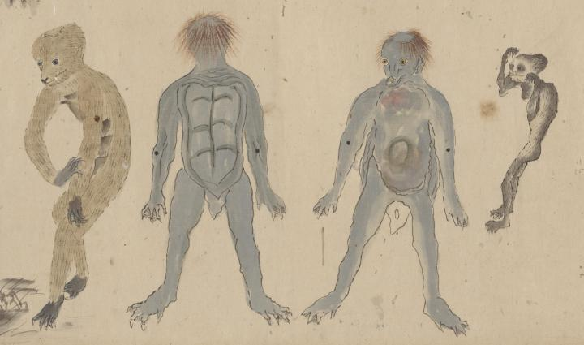

禽獣の一つとして、河童が描かれている。河童の特徴である、頭に皿、背中に甲羅がある。
出典：親書誌：U426_nichibunken_0377：禽獣図巻；キンジュウ ズカン／日付：2014／資源識別子：U426_nichibunken_0377_0001_0000
Copyright (c)2010- International Research Center for Japanese Studies, Kyoto, Japan. All rights reserved.